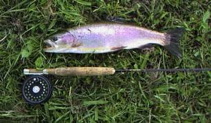

私のお気に入り
釣り道具 UFM Super Pulser PCF-754 #4-5 5pcs
1992年頃、就職して何回めかのボ―ナスをもらった時、大学時代の先輩と大井川の奥へ入る話が持ち上がり、荷物を小さくしたい一心で買ったＵＦＭウエダ製のパックロッド。せっかくの遠征は、なぜか不調で、はるばる出かけたにもかかわらずアマゴが１尾釣れただけの釣行であった。
その後、渓流のフライには、別の２ピ―スロッドを長い間使っていたので、この竿はほとんどお蔵入り状態で眠っていた。ところが、2000年の２月にニュージーランド留学から一時帰国した際、なにげなく思い出して旅行用ロッドケ―スの隙間に詰めたのが、この竿との新しいつき合いの始まりとなった。

今ではもう、ＵＦＭのカタログにも出ていないと思われるが、ベ―シックなスロ―アクション、しっかりしたバット、丁寧な造りのフェル―ル、仕上げなどは、地味ながらも長く使うほど、しっくりと馴染んでくるような気がする。５ピ―スゆえに仕舞寸法は48cmぐらいと短く、ベストの背中に差して歩くことができる。これは、釣り場に行くまでに牧場の柵を跨いだりくぐったりする時に非常に便利である。
ラインの指定は４番、あるいは５番となっているが、どちらのラインを載せても問題なくキャスト出来る。さすがに５番ラインをめいっぱい出すと、ちと荷が重いような気がする。しかし、足繁く通うスプリングクリ―クの釣りでは、シビアなプレゼンテ―ションが必要なこと、魚がそれほど大きくないこともあって、キルウェルの６番９ftよりもこの竿ばかり使っている。
また、山岳の小渓流で、藪の下を釣ったりするときには、７フィ―ト半の長さがとても便利である。条件さえ良ければ、50cmまでのレインボ―の突進にも十分耐えられるだけのパワ―もあるので、ハミルトン近郊の釣りの80%ぐらいをカバ―してくれている。もっとも、今は小型のリ―ルを持っていないので、６番用のリ―ルを付けているのでちょっとバランスが悪いと言えば悪いのだが、もう慣れてしまった。
老舗のメ―カ―の良心と、実力を十分感じさせてくれる、良いロッドである。
私のお気に入り 目次へ
サイトマップ
ホームへ
お問い合わせ